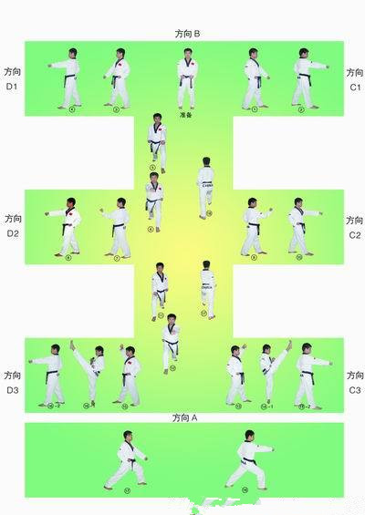
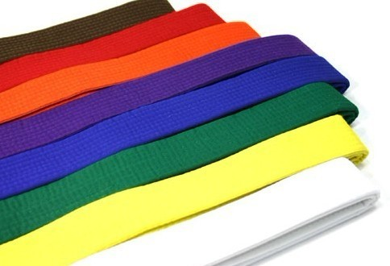

-
太极一章品势内涵
016-05-07 21:11:09 推荐于 百度知道

——跆拳道品势太极一章动作名称
-
跆拳道道带的级别及含义
羲和相扬 2017-01-14 12:58 发表于 山财大跆协

——跆拳道腰带颜色的意义
- 跆拳道的礼节
艾薇 2012-1-14 15:47 发表于 4399早教整理
——“以礼始，以礼终”的尚武精神
- 跆拳道的技术解析
羲和相扬 2017-2-18 15:47 发表于 山财大跆协
——跆拳道技术解析
- 跆拳道腰带系法
羲和相扬 2012-12-13 11:01 发表于 山财大跆协
——正规跆拳道带系法
- 跆拳道和空手道的区别
自由的气息 2012-07-25 10:06 发表于 跆拳道吧
——空手道和跆拳道有什么区别？
- 跆拳道基本腿法
红尘醉赤壁虹 2015-12-22 15:47 发表于
——前踢横踢下劈
- 跆拳道基本动作
红尘醉赤壁虹 2011-08-29 17:17:35 发表于
17:17:35

——腿法的艺术